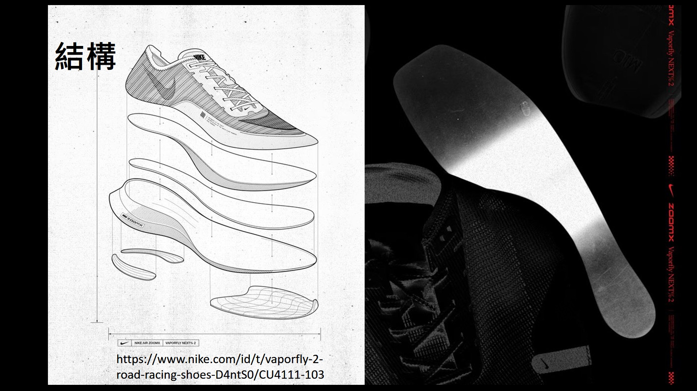
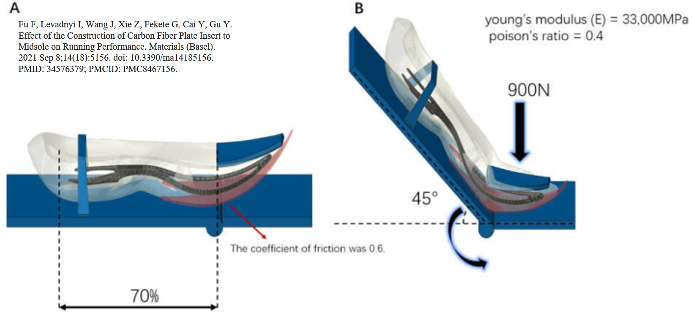
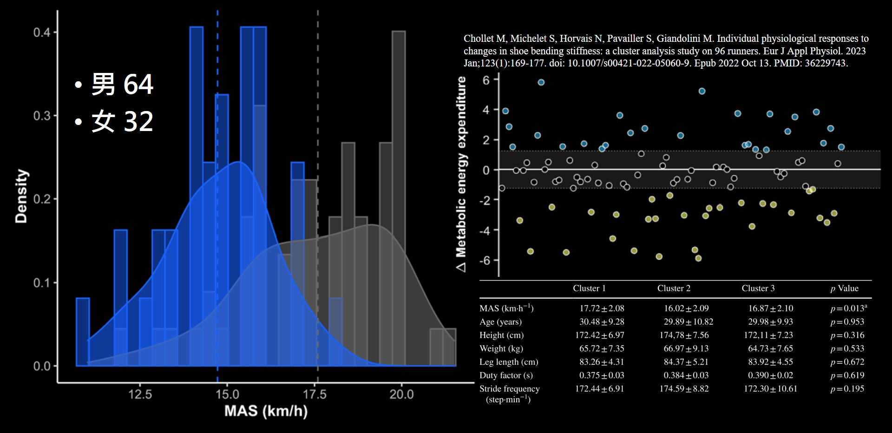
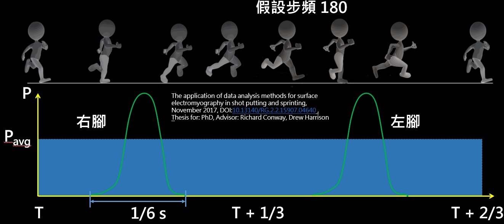
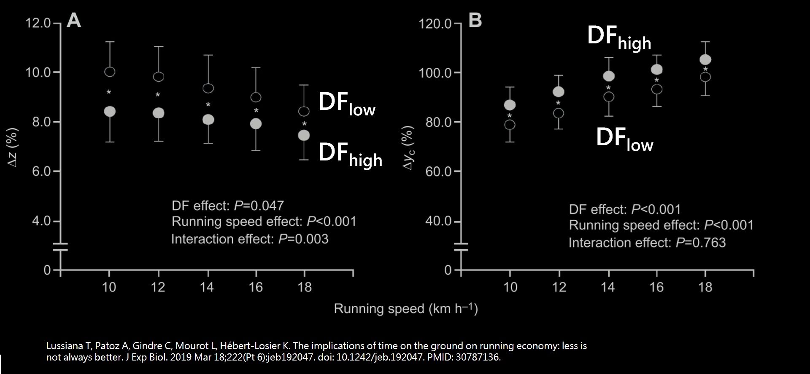
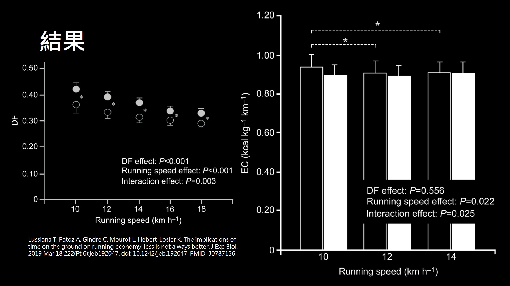
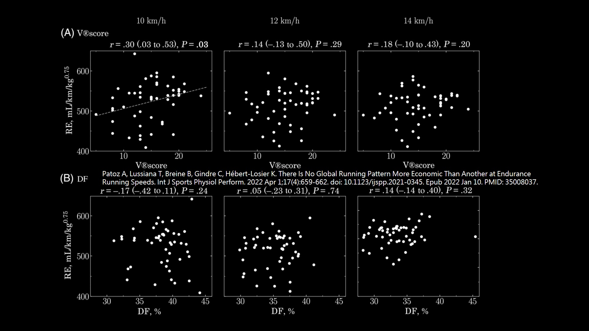

碳板鞋如何讓你跑得更快 跑步經濟性與垂直振幅
2019 年 kipchoge 在一個非正規賽事中，將全馬的成績突破 2 小時以內，當然這也是為了破 2 而精心策畫的，所以前方也有許多的破風手幫他減少風阻，最後也不負眾望進入兩小時內。雖然這不算是正規賽事所以不列入紀錄，但是在碳板鞋的宣傳上也達到了非常好的效果，現在各家跑鞋廠商都有自己的碳板鞋，連帶的很多市民跑者也是穿著碳板鞋去比賽，我自己也買了一雙 第一次穿就破 10k PB。不過也是有許多人在懷疑碳板鞋是否真的這麼神，所以這篇文章就從理論的方面來做分析，看看碳板鞋如何讓你更快，以及哪些人不適合碳板鞋。
現在的碳板鞋鞋底幾乎都是有好幾層，然後中間的部分放入整片的碳版，當然碳版的曲率從側面看，每雙鞋款會有些許不同，有些比較平有些比較彎，當然跑起來感覺也會有差，然後有些可能會在中間挖洞，不過不變的是碳版都至少有完整的一片，另外現在碳板鞋也越做越厚，是因為碳版雖然有彈性但是不吸震，而且大多數的碳版為了讓腳可以更順暢的往後，通常都會做個類似階梯的形狀，前後就有高低差，所以在泡棉的部分也很厚，當然也可以達到吸震的效果。

當然碳纖在許多領域已經取代原本的材料，像自行車目前幾乎是看不到鋁車跟鈦車，畢竟相同重量下用碳纖的強度跟剛性都很強，而碳底跑鞋早在 20 年前就有做出來了，沒有成為風潮的原因是什麼不清楚，不過至少就是缺的可以讓大家知道的話題，像 2019 年這次就成功將碳板鞋帶進市場，不過也因為很硬，所以給的反作用力也大，也就是說肌肉要一直承受來自地面的力，所以對於肌肉量就有一定的要求。\
| 材料 | 抗拉強度 (MPa) | 彈性係數 (GPa) | 密度 (kg/mm2) |
|---|---|---|---|
| 碳纖維 | 900 | 120 | 1.4 |
| 鋁合金 | 570 | 73 | 2.7 |
| 鈦合金 | 950 | 110 | 4.4 |
而其實觀察可以發現，對於高階跑鞋來說，底幾乎都是偏硬且偏薄的，例如以前的虎走跟皇速，碳板鞋雖然看起來厚，但因為中間加了碳版，所以腳底與碳版之間的厚度其實也沒厚多少，當然碳板鞋另外一個點就是鞋底不易拉伸，上圖就是沒用碳版的鞋子，鞋底形變量很大，下圖就是有用碳版的鞋子，幾乎是不會有形變，如果這種全碳版的鞋子可以凹，那可能是碳版斷了，所以單純從減少能量消耗的觀點來看，碳板鞋確實可以從物理上來減少能量消耗。


當然碳板鞋的碳版也不是隨便做都可以幫助你，大多是的碳版在前方會有點微微往上凹，就是有點像湯匙舀湯的部分，這個設計就是針對跑步腳掌姿勢去設計的，畢竟跑步往前蹬時就是靠腳趾與腳掌處彎曲施力，所以大部分強調跑速的碳板鞋，裡面放的碳版形狀都會有這種設計，至於翹的角度多少就是各家產品設計了。

雖然碳板鞋在許多賽事真的幫助了很多人破紀錄，而且從物理上來看能量損耗確實減少了，但是也很多論文指出並非所有人都能受益，有些人穿了碳板鞋跑步的經濟性反而下降，像這篇就找了 96 人 64 男與 32 女做實驗，10 k 成績的分布也滿平均的分成四組，但是最後的實驗結果出來可以分成三群，第一群為 29 人跑步經濟性是提升，第二群為 27 人跑步經濟性是降低，第三群為 40 人跑步經濟性是不改變的。然後在來細看一下各個組別的跑步的指標，可以看到在這三群中最大有氧速度差異較大，所以就有人說跑速沒多少建議不要穿碳板鞋，不過這其實就是碳板鞋問世的原因，也就是為了競速而設計的。但這論文中沒有更詳細的資料說明哪些人提升，哪些人降低 不過個人推測跟足部落地方式有關，所以要進入碳板鞋的世界之前，可以去看看 10 k 45分 半馬破百或，全馬 3.5 小時以內的人他們的跑步姿勢，然後改善自己的姿勢 穿碳板鞋才能如虎添翼。

跑步的動作是一隻腳會在地上，然後有一段時間會兩腳離地，所以跑步的垂直振幅是必要的存在，當然垂直振幅也不能夠太大，因為跑步主要是看往前的步距而非看往上的高度。不過垂直振幅越高，那將腳由後往前的時間就越多，也就是這段時間的功率就會越低，但是單純從跑步的力學分析來看，如果垂直振幅越高那也會浪費更多的能量，另外一個就是觸地時間，這兩個變數是，有在練跑步的人會關係且希望縮小的。
那麼我們來看一下這兩個變數會如何影響跑者，首先先來看垂直振幅 垂直振幅會影響的給人的力，如果觸地時間相同的話 垂直振幅越大，那麼來自於地板的衝擊力就會越高，這個時候就要來看看觸地時間會怎麼變化，當然垂直振幅越大 就會耗費越多能量將身體抬起來，所以通常比較關心振幅與步幅的比值。

這邊就有一篇論文在研究觸地時間與跑步經濟性，總共招募 40 位受試者 依照觸地時間分成兩組，其中每組都是 12 男 8 女 詳細資料如這張表，DF 的定義就是一隻腳的腳跟著地到腳尖離地的時間，和同隻腳從前一次腳跟落地的時間到這次腳跟落地的時間兩者的比值，值越大表示觸地時間越久。
我們先來看 DF 值與垂直振幅還有步距的關係，其中垂直振幅是看跑步時的質心，跟立正時的質心鉛質位置的差值，空心是低 DF 的組別，實心則是高的，從左圖可以知道 低 DF 的組別垂直振幅則會較高，但是當跑速越快時 兩個組別的垂直振幅會越接近。右圖則是步幅與 DF 的關係，可以看到當跑速增加，兩者也都會增加 之間的差異幾乎一樣，通常來說跑速越快步距一定會越大，而步距越大表是兩腳所張開的角度也會越大，所以質心的垂直位移就會越小，是必然的結果。

再來看跑步速率與 DF 的關係，可以看到當跑速越快時，兩個組別的 DF 也會越來越少，差異也越來越小，因為跑的越快所施的力就要越高，所以在跑步的動作下，跑越快觸地時間越短是必然的結果，主要是因為跑步一定要有雙腳離地的步驟。在來看看跑者最關心的跑步經濟性，對於不同 DF 在相同速率的情況下，可以看到跑步經濟性幾乎是沒有差異的，也就是說在相同速率下，在這論文研究的 DF 內，跑步的能量消耗並不會有太大的差異。

另外也有一篇論文在研究跑步的經濟性與，垂直振幅還有 DF 值的關係，一樣在跑速 10, 12, 14 的形況下去做實驗，並將結果的散步圖畫出來 發現很接近圓形，這就表示相同跑速下的垂直振幅和 DF，與跑步的經濟性沒關係。這篇論文也說在這種長時間的配速下，
不應該藉由改變自發性地跑姿來改善跑步的經濟性。

參考資料：
https://www.nike.com/id/t/vaporfly-2-road-racing-shoes-D4ntS0/CU4111-103
https://www.zhihu.com/tardis/zm/art/373862779?source_id=1003
https://runrepeat.com/guides/flexible-vs-stiff-running-shoes
Fu F, Levadnyi I, Wang J, Xie Z, Fekete G, Cai Y, Gu Y. Effect of the Construction of Carbon Fiber Plate Insert to Midsole on Running Performance. Materials (Basel). 2021 Sep 8;14(18):5156. doi: 10.3390/ma14185156. PMID: 34576379; PMCID: PMC8467156.
Chollet M, Michelet S, Horvais N, Pavailler S, Giandolini M. Individual physiological responses to changes in shoe bending stiffness: a cluster analysis study on 96 runners. Eur J Appl Physiol. 2023 Jan;123(1):169-177. doi: 10.1007/s00421-022-05060-9. Epub 2022 Oct 13. PMID: 36229743.
The application of data analysis methods for surface electromyography in shot putting and sprinting, November 2017, DOI:10.13140/RG.2.2.15907.04640 , Thesis for: PhD, Advisor: Richard Conway, Drew Harrison
David F. Jenny, Patrick Jenny, On the mechanical power output required for human running – Insight from an analytical model, Journal of Biomechanics, Volume 110, 2020, 109948, ISSN 0021-9290,
https://doi.org/10.1016/j.jbiomech.2020.109948.
Lussiana T, Patoz A, Gindre C, Mourot L, Hébert-Losier K. The implications of time on the ground on running economy: less is not always better. J Exp Biol. 2019 Mar 18;222(Pt 6):jeb192047. doi: 10.1242/jeb.192047. PMID: 30787136.
Patoz A, Lussiana T, Breine B, Gindre C, Hébert-Losier K. There Is No Global Running Pattern More Economic Than Another at Endurance Running Speeds. Int J Sports Physiol Perform. 2022 Apr 1;17(4):659-662. doi: 10.1123/ijspp.2021-0345. Epub 2022 Jan 10. PMID: 35008037.
Buśko, K. (2004). The influence of pedalling frequency on mechanical efficiency in exercices with the same intensity.